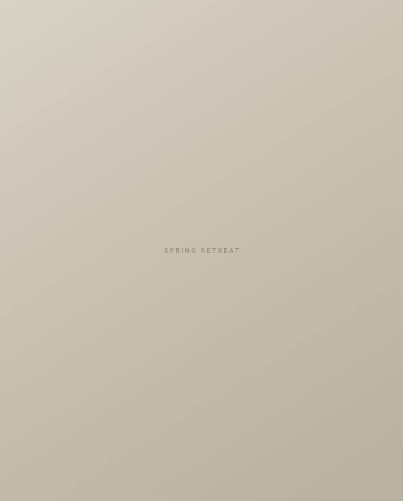
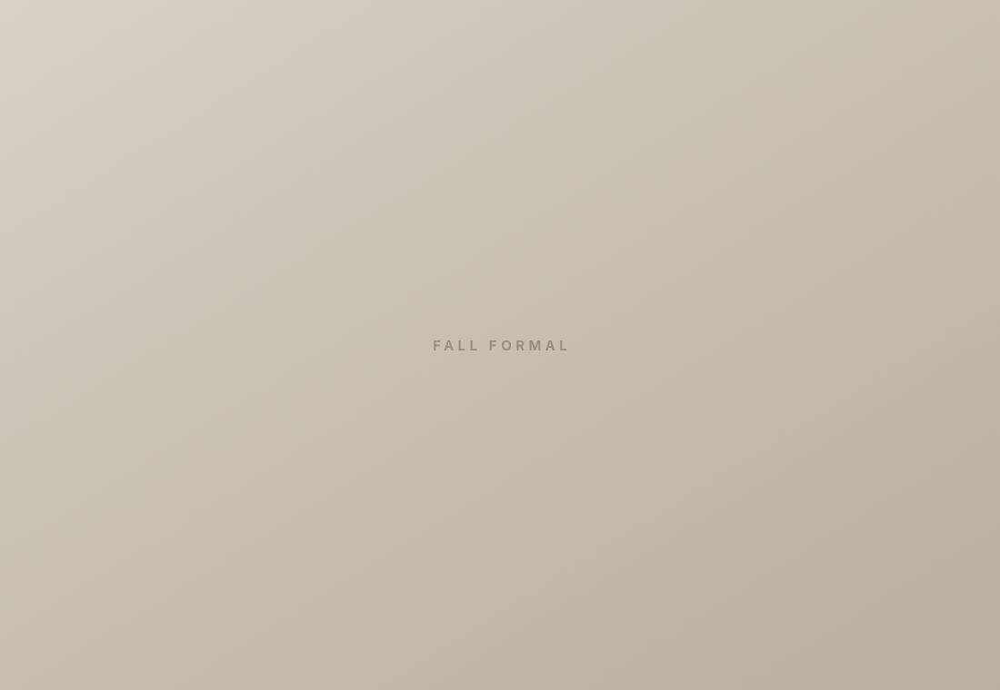

Phi Chi Theta
University of South Florida
Career preparation, leadership, and a business network before you graduate.
More than just a business fraternity.
Three parts of the chapter. Members run all three.
Speakers, resume and LinkedIn workshops, and a full day of training at Fall Summit.

Members run the fundraisers and volunteer days, not just attend them. Recent partners: Hillsborough Education Foundation, JA Finance Park, Parkland Cares.

Intramurals, Fall Formal, Spring Retreat. Members refer and vouch for each other long after graduation.

What we have to show for it.
- Goldman Sachs
- Morgan Stanley
- Citi
- Wells Fargo
- PNC
- Raymond James
- Fisher Investments
- S&P Global
- KPMG
- Deloitte
- PwC
- Amazon
- Nestlé
- Unilever
- NBCUniversal
- Lockheed Martin
- Victoria’s Secret
- Formula 1
- New York Jets
- USF
-
95%
Members placed in internships or full-time roles
-
3.60
Chapter average GPA
-
15
“25 Under 25” honorees

A national fraternity since 1924.
- 40+ Chapters
- 23,000+ Members nationwide
- 20+ Chapter awards
Membership connects Zeta Rho to alumni and chapters in cities across the country. That matters when members recruit, relocate, or need an introduction.
Zeta Rho was chartered at USF in September 2018 by 18 founding students.
College should look like this.


How to join PCT.
Six events, September 2 to 18. Open to business and economics majors and minors. Rush is free.
-
Show up.
Info Night is Wednesday, September 2 at 7:00 PM in BSN 225.
-
Meet the chapter.
Bring the real questions: time commitment, dues, GPA.
-
Both sides decide.
Nothing is settled on night one.
Yours either way. You keep the resume, the practice, and the contacts whether or not you join.
Your path starts here.
Meet the chapter and see whether PCT belongs in your college experience.